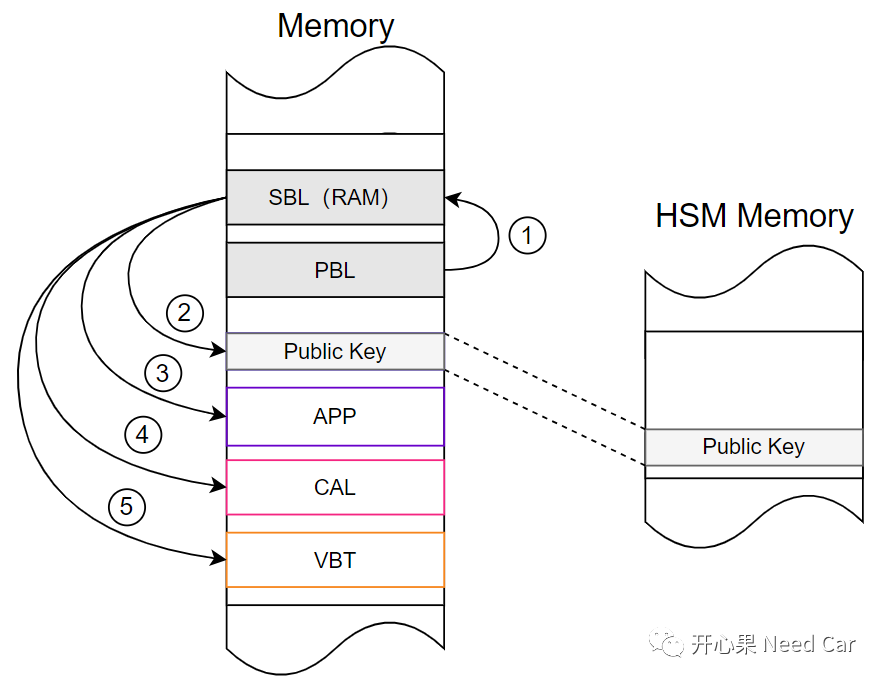

开心果 Need Car · 2023-10-01T08:19:00+08:00 · 微信原文
随着车联网的快速发展，给车主带来便利的同时，也带来了潜在隐患。便利的一面：无钥匙进入、远程启动、远程升级（OTA，Over-the-Air ）、远程诊断等等；隐患的一面：敏感个人信息泄露、车辆被远程黑客操控等等。大家可能觉得车辆被黑客操控等事件远不可及，但是，这种事件真实存在，大家可以通过关键字“Yandex Taxi 黑客攻击”检索一下相关新闻。2022年，黑客通过俄罗斯叫车软件Yandex Taxi，将所有可预约的车辆呼叫至莫斯科，导致当地交通挤塞。再说敏感个人信息泄露的问题，引用《汽车整车信息安全技术要求》对“敏感个人信息”的描述：
“一旦泄露或者非法使用，可能导致车主、驾驶人、乘车人、车外人员等受到歧视或者人身、财产安全受到严重危害的个人信息，包括车辆行踪轨迹、音频、视频、图像和生物识别特征等信息。”
所以，提高车辆信息安全的问题，迫在眉睫。在立法方面，欧盟等西方国家已经出台ISO 21434、WP29等相关法规，国内，《汽车整车信息安全技术要求》也已经处于送审状态。所以，作为汽车人，我们又怎能不嗅到信息安全的重要性呢？
Public Key何时写入及存储
1、什么是Public Key
Public Key，俗称"公钥"，相对于私钥（Private Key）,公钥可用来验证对应私钥的签名，即："验签"。公钥可以发送给第三方使用，而私钥只能节点自身或者信任中心（Trust Center）保管，不能让第三方知道。
工程开发中，Public Key又分为Development Public Key（开发公钥）和Product Public Key（产品公钥）。
Development Public Key：在软件开发阶段所使用的公钥称为开发公钥。
Product Public Key：当应用软件开发完成，需要释放到产线（EOL，End Of Line）刷写应用软件前，需要提前写入公钥，公钥仅写入一次，不可修改。有些需求中，将其视为验证应用软件的可信任根或者可信锚（Trust Anchor）。
Development Public Key和Product Public Key本质上没有太大区别，均可以传播，只是一个在软件开发阶段使用，一个在软件释放到产线时使用。
既然Public Key的主要作用是验签，那就不得不提签名算法（Signing Method），工程上，常用SHA256、RSA2048组合进行签名操作。
（一）SHA256、RSA2048作用
RSA-2048：非对称成加密算法，发送方和接收方均各有一组公钥和私钥key。因存在幂运算，非对称加密算法计算速度远低于AES-256等算法（对称算法，加密速度快，适用于大量数据加密）。非对称算法适用于小量数据加密，eg：Public key加密。
SHA-256：安全Hash（哈希）算法，主要用于数据完整性（Integrity）验证。功能与CRC类似，相比于CRC的完整性校验，SHA-256的完整性验证更可靠。
所以，RSA-2048用于小量数据（eg：签名信息、公钥等）非对称加密，SHA-256用于数据完整性校验。关于这两个算法，在前文《信息安全（下）：软件认证（Authentication）》已经聊过。
2、Public Key何时写入及存储
Public Key可以通过$2E（Write Data By Identifier service）写入ECU。可是，Public Key何时写入到ECU中呢？由于Public Key的主要作用是验证（Verify）软件块（Software Part），一般来说，Public Key需要在刷写App、Cal等程序之前写入，以便于验证软件块有效性。既然Public Key是验证其它信息的基础，那么就需要Public Key存储在一块重要区域，eg：HSM NVM。同时，确保此区域不能被修改，工程上，常常要求Public Key（这里指产品公钥）刷写到OTP（One-Time-Programmable）区域，即：只能进行一次编程，以防公钥写入后的非法篡改。这就意味着：控制器在产线刷写一次公钥（Product Public Key），此公钥伴随此产品终身，以后的App等程序升级中，依然使用它，示意如下：

VBT的哈希值（Root Hash Value）通过私钥进行非对称加密，生成数字签名（Digital Signatures）发送给ECU，ECU使用公钥对数字签名解密，算出Root Hash Value #1，同时，ECU通过VBT的起始地址和长度计算Root Hash Value #2，如果Root Hash Value #1 == Root Hash Value #2，则Root Hash验证通过。
数字签名：验证信息来源和完整性的技术，使用私钥（Private Key）对目标数据进行加密，生成数字签名，再用公钥进行验证。
3、拓展思考
往期精彩回顾
UDS：Security Access service (0x27)，值得深聊